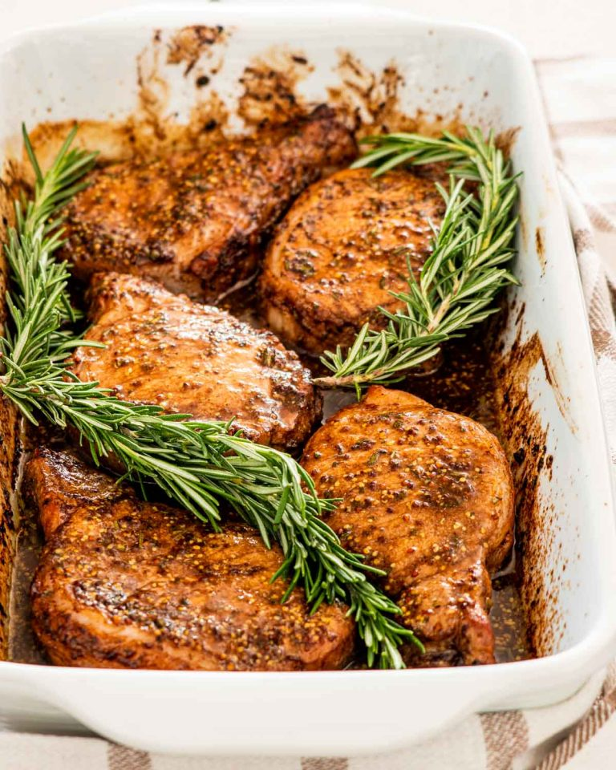

Mustard Balsamic Pork Chops

Description
These Mustard Balsamic Pork Chops only take 5 minutes of prep time and 20 minutes in the oven.
Ingredients
- 5 pork chops
- 1/4 cup olive oil
- 2 tablespoon wholegrain mustard
- 1 tablespoon fresh rosemary
- 1/4 balsamic vinegar
- salt and pepper to taste
Steps
- Make the marinade: Whisk the olive oil, vinegar, rosemary, salt and pepper in a bowl until it begins to emulsify
- Marinate the chops: Place the pork chops in a baking dish, then pour the marinade over the chops and rub it all over them evenly so that they're completely covered. Cover with plastic wrap and refrigerate for at least 1 hour to overnight.
- Prep the oven: Preheat the over to 425 degrees F.
- Bake: Remove plastic wrap from the baking dish and bake them for about 20 to 30 minutes or until the internal temperature of the pork chops reaches 145 degrees F.